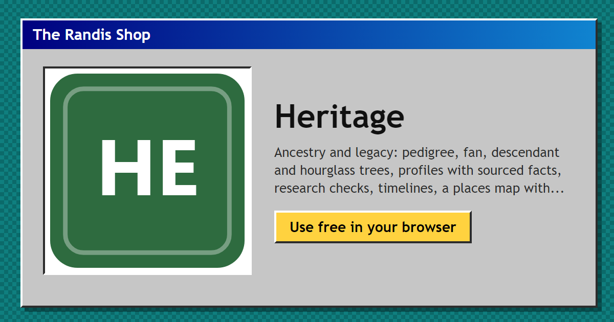

Heritage

Ancestry and legacy: pedigree, fan, descendant and hourglass trees, profiles with sourced facts, research checks, timelines, a places map with migrations, DNA match estimates, stories and heirlooms. Web research and the AI genealogist need Randis UDS.
Made with Randis UDS, a free desktop app that builds the tools you describe.